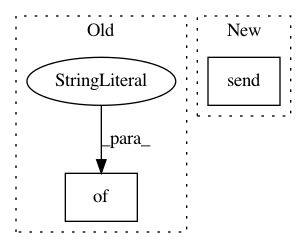

2fd487bb253f2a634e25925f2d1b3e357c0c7b1d,sos/sos_executor.py,SoS_Worker,run_workflow,#SoS_Worker#Any#Any#Any#Any#Any#Any#Any#,127
Before Change
pipe.send(
{"__workflow_id__": workflow_id
})
def run_step(self, section, context, shared, run_mode, sig_mode, verbosity, pipe):
After Change
pipe.send(res)
else:
res["__workflow_id__"] = workflow_id
pipe.send(res)
def run_step(self, section, context, shared, run_mode, sig_mode, verbosity, pipe):
self.reset_dict()
In pattern: SUPERPATTERN
Frequency: 3
Non-data size: 2
Instances
Project Name: vatlab/SoS
Commit Name: 2fd487bb253f2a634e25925f2d1b3e357c0c7b1d
Time: 2017-03-06
Author: ben.bog@gmail.com
File Name: sos/sos_executor.py
Class Name: SoS_Worker
Method Name: run_workflow
Project Name: OpenMined/Grid
Commit Name: 2708ccddd59bc7be358dc8ae8297dce26f545741
Time: 2019-10-04
Author: ionesiojr@gmail.com
File Name: grid/websocket_client.py
Class Name: WebsocketGridClient
Method Name: delete_model
Project Name: minerva-ml/open-solution-data-science-bowl-2018
Commit Name: 28ec5687220f562b3bd1b220ed80eded79c54824
Time: 2018-02-09
Author: kamil-kaczmarek@users.noreply.github.com
File Name: steps/pytorch/callbacks.py
Class Name: NeptuneMonitor
Method Name: on_batch_end